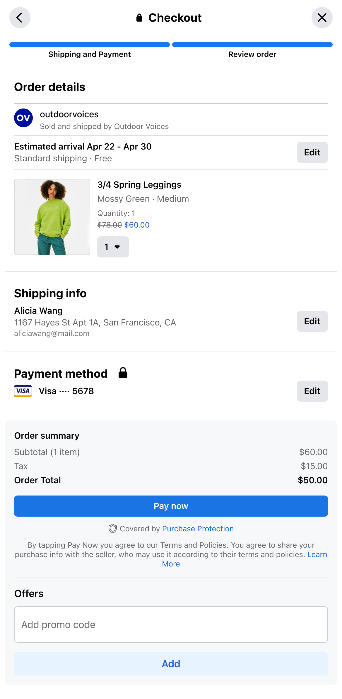
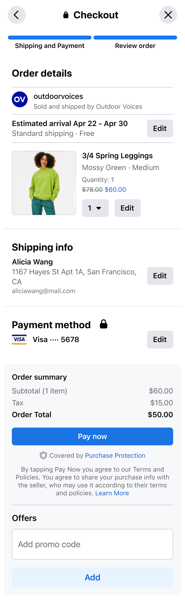

Facebook Web
Facebook Shops’ web checkout was dated, out of step with the app, and losing high-value desktop orders.
We rebuilt it as a stepped modal flow, with order totals visible at every step.
One responsive framework for the whole shopping journey.


I led a web component library aligned with the Facebook Design System and the apps.
Exceeded goals — transactions and GMV up significantly.
Faster design and engineering, better cross-org collaboration, and the foundation for subscriptions, donations and full-screen checkout.